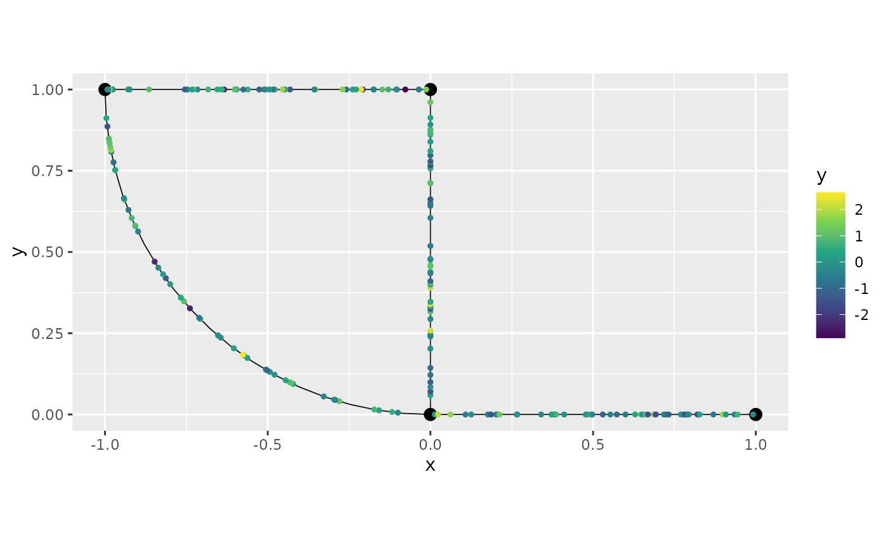
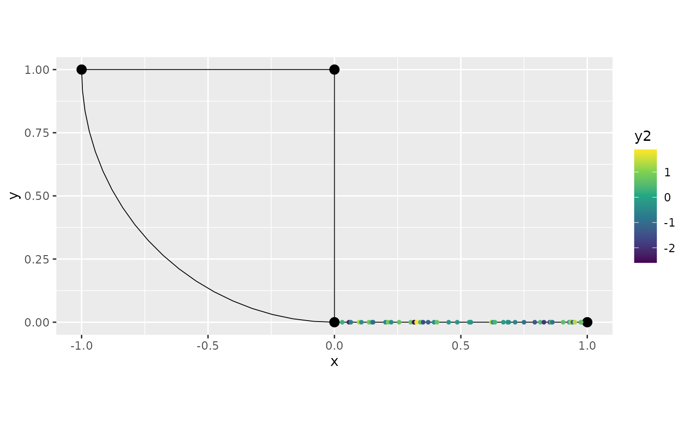

Data manipulation on metric graphs
David Bolin, Alexandre B. Simas, and Jonas Wallin
Created: 2023-10-24. Last modified: 2024-07-19.
Source:vignettes/metric_graph_data.Rmd
metric_graph_data.RmdIntroduction
In this vignette we will provide some examples of data manipulation
on metric graphs. More precisely, we will show how to add data to the
metric graph, how to retrieve the data, how to do data manipulation
using some of the tidyverse tools. Finally, we will show
how add the results of these manipulations back to the metric graph.
As an example throughout the vignette, we consider the following metric graph:
edge1 <- rbind(c(0,0),c(1,0))
edge2 <- rbind(c(0,0),c(0,1))
edge3 <- rbind(c(0,1),c(-1,1))
theta <- seq(from=pi,to=3*pi/2,length.out = 20)
edge4 <- cbind(sin(theta),1+ cos(theta))
edges = list(edge1, edge2, edge3, edge4)
graph <- metric_graph$new(edges = edges)
graph$plot()
For further details on the construction of metric graphs, see Working with metric graphs
Adding and accessing data on metric graphs
Let us start by generating some data to be added to the metric graph
object we created, namely graph. We first generate the
locations:
obs_per_edge <- 50
obs_loc <- NULL
for(i in 1:(graph$nE)) {
obs_loc <- rbind(obs_loc,
cbind(rep(i,obs_per_edge),
runif(obs_per_edge)))
}Now, we will generate the data and build a data.frame to
be added to the metric graph:
y <- rnorm(graph$nE * obs_per_edge)
df_data <- data.frame(y=y, edge = obs_loc[,1], pos = obs_loc[,2])We can now add the data to the graph by using the
add_mesh_observations() method. We will add the data by
providing the edge number and relative distance on the edge. To this
end, when adding the data, we need to supply the names of the columns
that contain the edge number and the distance on edge by entering the
edge_number and distance_on_edge arguments.
Further, since we are providing the relative distance, we need to set
the normalized argument to TRUE:
graph$add_observations(data = df_data, edge_number = "edge",
distance_on_edge = "pos", normalized = TRUE)## Adding observations...We can check that the data was successfully added by retrieving them
from the metric graph using the get_data() method:
graph$get_data()## # A tibble: 200 × 6
## y .edge_number .distance_on_edge .group .coord_x .coord_y
## <dbl> <dbl> <dbl> <dbl> <dbl> <dbl>
## 1 -0.0736 1 0.0134 1 0.0134 0
## 2 2.09 1 0.0233 1 0.0233 0
## 3 1.68 1 0.0618 1 0.0618 0
## 4 -0.528 1 0.108 1 0.108 0
## 5 -0.180 1 0.126 1 0.126 0
## 6 -0.462 1 0.177 1 0.177 0
## 7 -1.52 1 0.186 1 0.186 0
## 8 -0.655 1 0.202 1 0.202 0
## 9 -0.636 1 0.206 1 0.206 0
## 10 1.34 1 0.212 1 0.212 0
## # ℹ 190 more rowsWe can also visualize the data by using the plot()
method and specifying which column we would like to plot:
graph$plot(data = "y")
We can add more data to the metric graph by using the
add_observations() method again. To this end, let us create
an additional dataset. This time, we will add it using spatial
coordinates. In this case, we will generate 50 uniform
locations to be the x coordinate of the data, and we will
keep the y coordinate equal to zero. Further, we will
generate 50 more realizations of a standard gaussian
variable as the y2 variable.
coordx <- runif(50)
coordy <- 0
y2 <- rnorm(50)
df_data2 <- data.frame(y2 = y2, coordx = coordx, coordy = coordy)Let us add this dataset. Now, we need to set data_coords
to "spatial" and we need to supply the names of the columns
of the x and y coordinates:
graph$add_observations(data = df_data2, data_coords = "spatial",
coord_x = "coordx", coord_y = "coordy")## Adding observations...## Converting data to PtE## [1] y2 coordx coordy
## <0 rows> (or 0-length row.names)Let us check that the data was successfully added:
graph$get_data()## # A tibble: 250 × 8
## y y2 .distance_to_graph .edge_number .distance_on_edge .group
## <dbl> <dbl> <dbl> <dbl> <dbl> <dbl>
## 1 -0.0736 NA NA 1 0.0134 1
## 2 2.09 NA NA 1 0.0233 1
## 3 NA 0.278 0 1 0.0308 1
## 4 NA -2.26 0 1 0.0574 1
## 5 1.68 NA NA 1 0.0618 1
## 6 NA -0.636 0 1 0.0649 1
## 7 NA 1.31 0 1 0.0978 1
## 8 NA -0.334 0 1 0.107 1
## 9 -0.528 NA NA 1 0.108 1
## 10 -0.180 NA NA 1 0.126 1
## # ℹ 240 more rows
## # ℹ 2 more variables: .coord_x <dbl>, .coord_y <dbl>We can also plot:
graph$plot(data = "y2")
Observe that NAs were added, since df_data
does not contain the column y2 and df_data2
does not contain the column y.
By default, the get_data() method excludes all rows in
which all the variables are NA (the location variables are
not considered here). We can also show the rows that do not contain any
NA observations by using the drop_na argument
in the get_data() method:
graph$get_data(drop_na = TRUE)## # A tibble: 0 × 8
## # ℹ 8 variables: y <dbl>, y2 <dbl>, .distance_to_graph <dbl>,
## # .edge_number <dbl>, .distance_on_edge <dbl>, .group <dbl>, .coord_x <dbl>,
## # .coord_y <dbl>Observe that there is no row, since all of them contain at least one
NA.
Suppose now that we want to replace the metric graph data by a new
dataset. To this end we have two options. The first one is to use the
clear_observations() method, then add the observations:
graph$clear_observations()We will now create the dataset we want to add. To simplify, we will
use the default naming for the edge number and distance on edge, so that
we do not need to specify them in the add_observations()
method:
y3 <- rnorm(graph$nE * obs_per_edge)
df_data3 <- data.frame(y3=y3, edge_number = obs_loc[,1], distance_on_edge = obs_loc[,2])We can now add the data. Remember to set normalized to
TRUE since we are providing the relative distance on
edge:
graph$add_observations(data = df_data3, normalized = TRUE)## Adding observations...and check:
graph$get_data()## # A tibble: 200 × 6
## y3 .edge_number .distance_on_edge .group .coord_x .coord_y
## <dbl> <dbl> <dbl> <dbl> <dbl> <dbl>
## 1 1.90 1 0.0134 1 0.0134 0
## 2 -0.710 1 0.0233 1 0.0233 0
## 3 1.15 1 0.0618 1 0.0618 0
## 4 1.12 1 0.108 1 0.108 0
## 5 -0.715 1 0.126 1 0.126 0
## 6 -2.13 1 0.177 1 0.177 0
## 7 1.44 1 0.186 1 0.186 0
## 8 1.76 1 0.202 1 0.202 0
## 9 -0.0565 1 0.206 1 0.206 0
## 10 1.59 1 0.212 1 0.212 0
## # ℹ 190 more rowsThe second way to replace the data in the metric graph is to set the
clear_obs argument to TRUE. We will also
create a new dataset using the default naming for the x and
y coordinates, so we do not need to specify them:
df_data4 <- data.frame(y4 = exp(y2), coord_x = coordx, coord_y = coordy)and we add them (remember to set data_coords to
"spatial"):
graph$add_observations(data = df_data4, clear_obs = TRUE,
data_coords = "spatial")## Adding observations...## Converting data to PtE## [1] y4 coord_x coord_y
## <0 rows> (or 0-length row.names)and we can check it replaced:
graph$get_data()## # A tibble: 50 × 7
## y4 .distance_to_graph .edge_number .distance_on_edge .group .coord_x
## <dbl> <dbl> <dbl> <dbl> <dbl> <dbl>
## 1 1.32 0 1 0.0308 1 0.0308
## 2 0.104 0 1 0.0574 1 0.0574
## 3 0.530 0 1 0.0649 1 0.0649
## 4 3.72 0 1 0.0978 1 0.0978
## 5 0.716 0 1 0.107 1 0.107
## 6 2.23 0 1 0.136 1 0.136
## 7 1.19 0 1 0.147 1 0.147
## 8 0.345 0 1 0.153 1 0.153
## 9 0.564 0 1 0.202 1 0.202
## 10 2.50 0 1 0.213 1 0.213
## # ℹ 40 more rows
## # ℹ 1 more variable: .coord_y <dbl>Adding grouped data to metric graphs
The graph structure also allow to add grouped data. To this end we need to specify which column of the data will be the grouping variable.
To illustrate, let us generate a grouped data. We will use the same locations we generated in the previous section.
n.repl <- 5
y_repl <- rnorm(n.repl * graph$nE * obs_per_edge)
repl <- rep(1:n.repl, each = graph$nE * obs_per_edge)Let us now create the data.frame with the grouped data,
where the grouping variable is repl:
df_data_repl <- data.frame(y = y_repl, repl = repl,
edge_number = rep(obs_loc[,1], times = n.repl),
distance_on_edge = rep(obs_loc[,2], times = n.repl))We can now add this data.frame to the graph by using the
add_observations() method. We need to set
normalized to TRUE, since we have relative
distances on edge. We also need to set the group argument
to repl, since repl is our grouping variable.
Finally, we will also set clear_obs to TRUE
since we want to replace the existing data.
graph$add_observations(data = df_data_repl,
normalized = TRUE,
clear_obs = TRUE,
group = "repl")## Adding observations...Let us check the graph data. Observe that the grouping variable is
now .group.
graph$get_data()## # A tibble: 1,000 × 7
## y repl .edge_number .distance_on_edge .group .coord_x .coord_y
## <dbl> <int> <dbl> <dbl> <chr> <dbl> <dbl>
## 1 1.50 1 1 0.0134 1 0.0134 0
## 2 -1.79 1 1 0.0233 1 0.0233 0
## 3 0.488 1 1 0.0618 1 0.0618 0
## 4 -0.385 1 1 0.108 1 0.108 0
## 5 0.905 1 1 0.126 1 0.126 0
## 6 -0.145 1 1 0.177 1 0.177 0
## 7 2.00 1 1 0.186 1 0.186 0
## 8 -1.16 1 1 0.202 1 0.202 0
## 9 0.879 1 1 0.206 1 0.206 0
## 10 -0.816 1 1 0.212 1 0.212 0
## # ℹ 990 more rowsWe can obtain the data for a given group by setting the
group argument in the get_data() method:
graph$get_data(group = "3")## # A tibble: 200 × 7
## y repl .edge_number .distance_on_edge .group .coord_x .coord_y
## <dbl> <int> <dbl> <dbl> <chr> <dbl> <dbl>
## 1 1.11 3 1 0.0134 3 0.0134 0
## 2 0.774 3 1 0.0233 3 0.0233 0
## 3 0.464 3 1 0.0618 3 0.0618 0
## 4 -1.62 3 1 0.108 3 0.108 0
## 5 -1.48 3 1 0.126 3 0.126 0
## 6 -0.815 3 1 0.177 3 0.177 0
## 7 -1.25 3 1 0.186 3 0.186 0
## 8 0.0646 3 1 0.202 3 0.202 0
## 9 0.129 3 1 0.206 3 0.206 0
## 10 -0.881 3 1 0.212 3 0.212 0
## # ℹ 190 more rowsWe can also provide the group argument as a vector:
graph$get_data(group = c("3","5"))## # A tibble: 400 × 7
## y repl .edge_number .distance_on_edge .group .coord_x .coord_y
## <dbl> <int> <dbl> <dbl> <chr> <dbl> <dbl>
## 1 1.11 3 1 0.0134 3 0.0134 0
## 2 0.774 3 1 0.0233 3 0.0233 0
## 3 0.464 3 1 0.0618 3 0.0618 0
## 4 -1.62 3 1 0.108 3 0.108 0
## 5 -1.48 3 1 0.126 3 0.126 0
## 6 -0.815 3 1 0.177 3 0.177 0
## 7 -1.25 3 1 0.186 3 0.186 0
## 8 0.0646 3 1 0.202 3 0.202 0
## 9 0.129 3 1 0.206 3 0.206 0
## 10 -0.881 3 1 0.212 3 0.212 0
## # ℹ 390 more rowsThe plot() method works similarly. We can plot the data
from a specific group by specifying which group we would like to
plot:
graph$plot(data = "y", group = "3")More advanced grouping
Besides being able to group data acoording to one column of the data, we can also group the data with respect to several columns of the data. Let us generate a new data set:
n.repl <- 10
y_repl <- rnorm(n.repl * graph$nE * obs_per_edge)
repl_1 <- rep(1:n.repl, each = graph$nE * obs_per_edge)
repl_2 <- rep(c("a","b","c","d","e"), times = 2 * graph$nE * obs_per_edge)
df_adv_grp <- data.frame(data.frame(y = y_repl,
repl_1 = repl_1, repl_2 = repl_2,
edge_number = rep(obs_loc[,1], times = n.repl),
distance_on_edge = rep(obs_loc[,2], times = n.repl)))Let us now add these observations on the graph and group them by
c("repl_1","repl_2"):
graph$add_observations(data = df_adv_grp,
normalized = TRUE,
clear_obs = TRUE,
group = c("repl_1", "repl_2"))## Adding observations...Let us take a look at the grouped variables. They are stored in the
.group column:
graph$get_data()## # A tibble: 2,000 × 8
## y repl_1 repl_2 .edge_number .distance_on_edge .group .coord_x .coord_y
## <dbl> <int> <chr> <dbl> <dbl> <chr> <dbl> <dbl>
## 1 1.15 1 a 1 0.206 1.a 0.206 0
## 2 -0.529 1 a 1 0.266 1.a 0.266 0
## 3 0.344 1 a 1 0.386 1.a 0.386 0
## 4 0.921 1 a 1 0.482 1.a 0.482 0
## 5 -0.626 1 a 1 0.498 1.a 0.498 0
## 6 0.760 1 a 1 0.668 1.a 0.668 0
## 7 0.101 1 a 1 0.789 1.a 0.789 0
## 8 1.31 1 a 1 0.821 1.a 0.821 0
## 9 -1.35 1 a 1 0.898 1.a 0.898 0
## 10 -1.05 1 a 1 0.935 1.a 0.935 0
## # ℹ 1,990 more rowsObserve that the group variable is created, by default,
by pasting the group variables together with the . as
separator. We can change the separator using the group_sep
argument:
graph$add_observations(data = df_adv_grp,
normalized = TRUE,
clear_obs = TRUE,
group = c("repl_1", "repl_2"),
group_sep = ":")## Adding observations...Then,
graph$get_data()## # A tibble: 2,000 × 8
## y repl_1 repl_2 .edge_number .distance_on_edge .group .coord_x .coord_y
## <dbl> <int> <chr> <dbl> <dbl> <chr> <dbl> <dbl>
## 1 1.15 1 a 1 0.206 1:a 0.206 0
## 2 -0.529 1 a 1 0.266 1:a 0.266 0
## 3 0.344 1 a 1 0.386 1:a 0.386 0
## 4 0.921 1 a 1 0.482 1:a 0.482 0
## 5 -0.626 1 a 1 0.498 1:a 0.498 0
## 6 0.760 1 a 1 0.668 1:a 0.668 0
## 7 0.101 1 a 1 0.789 1:a 0.789 0
## 8 1.31 1 a 1 0.821 1:a 0.821 0
## 9 -1.35 1 a 1 0.898 1:a 0.898 0
## 10 -1.05 1 a 1 0.935 1:a 0.935 0
## # ℹ 1,990 more rowsTo plot the data for a particular group, we simply select the group
variable we want to plot. Let us plot y for
repl_1 equal to 3 and repl_2
equal to c:
graph$plot(data = "y", group = "3:c")Manipulating data from metric graphs in the tidyverse style
In this section we will present some data manipulation tools that are implemented in metric graphs and can be safely used.
The tools are based on dplyr::select(),
dplyr::mutate(), dplyr::filter(),
dplyr::summarise() and tidyr::drop_na().
Let us generate a dataset that will be widely used throughout this
section and add this to the metric graph object. Observe that we are
replacing the existing data by setting clear_obs to
TRUE:
df_tidy <- data.frame(y=y, y2 = exp(y), y3 = y^2, y4 = sin(y),
edge_number = obs_loc[,1], distance_on_edge = obs_loc[,2])
# Ordering to simplify presentation with NA data
ord_idx <- order(df_tidy[["edge_number"]],
df_tidy[["distance_on_edge"]])
df_tidy <- df_tidy[ord_idx,]
# Setting some NA data
df_tidy[["y"]][1] <- df_tidy[["y2"]][1] <- NA
df_tidy[["y3"]][1] <- df_tidy[["y4"]][1] <- NA
df_tidy[["y2"]][2] <- NA
df_tidy[["y3"]][3] <- NA
graph$add_observations(data = df_tidy, clear_obs = TRUE, normalized = TRUE)## Adding observations...Let us look at the complete data:
graph$get_data(drop_all_na = FALSE)## # A tibble: 200 × 9
## y y2 y3 y4 .edge_number .distance_on_edge .group .coord_x
## <dbl> <dbl> <dbl> <dbl> <dbl> <dbl> <dbl> <dbl>
## 1 NA NA NA NA 1 0.0134 1 0.0134
## 2 2.09 NA 4.36 0.870 1 0.0233 1 0.0233
## 3 1.68 5.38 NA 0.994 1 0.0618 1 0.0618
## 4 -0.528 0.590 0.279 -0.504 1 0.108 1 0.108
## 5 -0.180 0.836 0.0322 -0.179 1 0.126 1 0.126
## 6 -0.462 0.630 0.213 -0.445 1 0.177 1 0.177
## 7 -1.52 0.219 2.31 -0.999 1 0.186 1 0.186
## 8 -0.655 0.520 0.428 -0.609 1 0.202 1 0.202
## 9 -0.636 0.530 0.404 -0.594 1 0.206 1 0.206
## 10 1.34 3.83 1.80 0.974 1 0.212 1 0.212
## # ℹ 190 more rows
## # ℹ 1 more variable: .coord_y <dbl>select
The verb select allows one to choose which columns to
keep or to remove.
For example, let us select the columns y and
y2 from the metric graph dataset using the
select() method:
graph$select(y,y2)## # A tibble: 199 × 7
## y y2 .group .edge_number .distance_on_edge .coord_x .coord_y
## <dbl> <dbl> <dbl> <dbl> <dbl> <dbl> <dbl>
## 1 2.09 NA 1 1 0.0233 0.0233 0
## 2 1.68 5.38 1 1 0.0618 0.0618 0
## 3 -0.528 0.590 1 1 0.108 0.108 0
## 4 -0.180 0.836 1 1 0.126 0.126 0
## 5 -0.462 0.630 1 1 0.177 0.177 0
## 6 -1.52 0.219 1 1 0.186 0.186 0
## 7 -0.655 0.520 1 1 0.202 0.202 0
## 8 -0.636 0.530 1 1 0.206 0.206 0
## 9 1.34 3.83 1 1 0.212 0.212 0
## 10 -0.620 0.538 1 1 0.266 0.266 0
## # ℹ 189 more rowsFirst, observe that this select verb is metric graph
friendly since it does not remove the columns related to spatial
locations.
Also observe that the first original row, that contains only
NA was removed by default. To return all the rows, we can
set the argument .drop_all_na to FALSE:
graph$select(y, y2, .drop_all_na = FALSE)## # A tibble: 200 × 7
## y y2 .group .edge_number .distance_on_edge .coord_x .coord_y
## <dbl> <dbl> <dbl> <dbl> <dbl> <dbl> <dbl>
## 1 NA NA 1 1 0.0134 0.0134 0
## 2 2.09 NA 1 1 0.0233 0.0233 0
## 3 1.68 5.38 1 1 0.0618 0.0618 0
## 4 -0.528 0.590 1 1 0.108 0.108 0
## 5 -0.180 0.836 1 1 0.126 0.126 0
## 6 -0.462 0.630 1 1 0.177 0.177 0
## 7 -1.52 0.219 1 1 0.186 0.186 0
## 8 -0.655 0.520 1 1 0.202 0.202 0
## 9 -0.636 0.530 1 1 0.206 0.206 0
## 10 1.34 3.83 1 1 0.212 0.212 0
## # ℹ 190 more rowsFurther, observe that the second row also contain an NA
value in y2. To remove all the rows that contain
NA for at least one variable, we can set the argument
.drop_na to TRUE:
graph$select(y, y2, .drop_na = TRUE)## # A tibble: 198 × 7
## y y2 .group .edge_number .distance_on_edge .coord_x .coord_y
## <dbl> <dbl> <dbl> <dbl> <dbl> <dbl> <dbl>
## 1 1.68 5.38 1 1 0.0618 0.0618 0
## 2 -0.528 0.590 1 1 0.108 0.108 0
## 3 -0.180 0.836 1 1 0.126 0.126 0
## 4 -0.462 0.630 1 1 0.177 0.177 0
## 5 -1.52 0.219 1 1 0.186 0.186 0
## 6 -0.655 0.520 1 1 0.202 0.202 0
## 7 -0.636 0.530 1 1 0.206 0.206 0
## 8 1.34 3.83 1 1 0.212 0.212 0
## 9 -0.620 0.538 1 1 0.266 0.266 0
## 10 -0.100 0.905 1 1 0.267 0.267 0
## # ℹ 188 more rowsMoreover, if we want to remove a column, we can simply use the
select() method together with adding a minus sign
- in front of the column we want to be removed. For
example, to remove y2, we can do:
graph$select(-y2)## # A tibble: 199 × 8
## y y3 y4 .edge_number .distance_on_edge .group .coord_x .coord_y
## <dbl> <dbl> <dbl> <dbl> <dbl> <dbl> <dbl> <dbl>
## 1 2.09 4.36 0.870 1 0.0233 1 0.0233 0
## 2 1.68 NA 0.994 1 0.0618 1 0.0618 0
## 3 -0.528 0.279 -0.504 1 0.108 1 0.108 0
## 4 -0.180 0.0322 -0.179 1 0.126 1 0.126 0
## 5 -0.462 0.213 -0.445 1 0.177 1 0.177 0
## 6 -1.52 2.31 -0.999 1 0.186 1 0.186 0
## 7 -0.655 0.428 -0.609 1 0.202 1 0.202 0
## 8 -0.636 0.404 -0.594 1 0.206 1 0.206 0
## 9 1.34 1.80 0.974 1 0.212 1 0.212 0
## 10 -0.620 0.385 -0.581 1 0.266 1 0.266 0
## # ℹ 189 more rowsAlternatively, we can combine the select() function with
the output of get_data() to obtain the same results:
## # A tibble: 199 × 7
## y y2 .group .edge_number .distance_on_edge .coord_x .coord_y
## <dbl> <dbl> <dbl> <dbl> <dbl> <dbl> <dbl>
## 1 2.09 NA 1 1 0.0233 0.0233 0
## 2 1.68 5.38 1 1 0.0618 0.0618 0
## 3 -0.528 0.590 1 1 0.108 0.108 0
## 4 -0.180 0.836 1 1 0.126 0.126 0
## 5 -0.462 0.630 1 1 0.177 0.177 0
## 6 -1.52 0.219 1 1 0.186 0.186 0
## 7 -0.655 0.520 1 1 0.202 0.202 0
## 8 -0.636 0.530 1 1 0.206 0.206 0
## 9 1.34 3.83 1 1 0.212 0.212 0
## 10 -0.620 0.538 1 1 0.266 0.266 0
## # ℹ 189 more rowsObserve that the spatial locations columns were not removed as well.
To avoid removing NA variables, we need to set the argument
drop_all_na to FALSE when using the
get_data() method:
## # A tibble: 200 × 7
## y y2 .group .edge_number .distance_on_edge .coord_x .coord_y
## <dbl> <dbl> <dbl> <dbl> <dbl> <dbl> <dbl>
## 1 NA NA 1 1 0.0134 0.0134 0
## 2 2.09 NA 1 1 0.0233 0.0233 0
## 3 1.68 5.38 1 1 0.0618 0.0618 0
## 4 -0.528 0.590 1 1 0.108 0.108 0
## 5 -0.180 0.836 1 1 0.126 0.126 0
## 6 -0.462 0.630 1 1 0.177 0.177 0
## 7 -1.52 0.219 1 1 0.186 0.186 0
## 8 -0.655 0.520 1 1 0.202 0.202 0
## 9 -0.636 0.530 1 1 0.206 0.206 0
## 10 1.34 3.83 1 1 0.212 0.212 0
## # ℹ 190 more rowsWe can proceed similarly to remove y2:
## # A tibble: 199 × 8
## y y3 y4 .edge_number .distance_on_edge .group .coord_x .coord_y
## <dbl> <dbl> <dbl> <dbl> <dbl> <dbl> <dbl> <dbl>
## 1 2.09 4.36 0.870 1 0.0233 1 0.0233 0
## 2 1.68 NA 0.994 1 0.0618 1 0.0618 0
## 3 -0.528 0.279 -0.504 1 0.108 1 0.108 0
## 4 -0.180 0.0322 -0.179 1 0.126 1 0.126 0
## 5 -0.462 0.213 -0.445 1 0.177 1 0.177 0
## 6 -1.52 2.31 -0.999 1 0.186 1 0.186 0
## 7 -0.655 0.428 -0.609 1 0.202 1 0.202 0
## 8 -0.636 0.404 -0.594 1 0.206 1 0.206 0
## 9 1.34 1.80 0.974 1 0.212 1 0.212 0
## 10 -0.620 0.385 -0.581 1 0.266 1 0.266 0
## # ℹ 189 more rowsFinally, observe that this is a modification of
dplyr::select() made to be user-friendly to metric graphs,
since it keeps the spatial locations. For example, if we use the
standard version of dplyr::select() the result is
different:
graph$get_data() %>% dplyr:::select.data.frame(y,y2)## # A tibble: 199 × 2
## y y2
## <dbl> <dbl>
## 1 2.09 NA
## 2 1.68 5.38
## 3 -0.528 0.590
## 4 -0.180 0.836
## 5 -0.462 0.630
## 6 -1.52 0.219
## 7 -0.655 0.520
## 8 -0.636 0.530
## 9 1.34 3.83
## 10 -0.620 0.538
## # ℹ 189 more rowsfilter
The filter verb selects rows based on conditions on the
variables. For example, let us select the variables that are on
edge_number 3, with distance_on_edge greater
than 0.5:
filtered_data <- graph$filter(`.edge_number` == 3, `.distance_on_edge` > 0.5)We can plot the result using the plot() method together
with the newdata argument to supply the modified
dataset:
graph$plot(data = "y", newdata = filtered_data)
The behavior with NA variables is exactly the same as
with the select() method. For example, we can remove the
rows that contain NA variables by setting
drop_na to TRUE:
graph$filter(y > 1, .drop_na = TRUE)## # A tibble: 30 × 9
## y y2 y3 y4 .edge_number .distance_on_edge .group .coord_x
## <dbl> <dbl> <dbl> <dbl> <dbl> <dbl> <dbl> <dbl>
## 1 1.34 3.83 1.80 0.974 1 0.212 1 0.212
## 2 1.18 3.24 1.38 0.923 1 0.647 1 0.647
## 3 1.43 4.19 2.05 0.990 1 0.687 1 0.687
## 4 1.77 5.85 3.12 0.981 1 0.898 1 0.898
## 5 2.21 9.08 4.87 0.805 2 0.258 1 0
## 6 1.00 2.72 1.00 0.841 2 0.316 1 0
## 7 2.31 10.1 5.33 0.740 2 0.339 1 0
## 8 2.08 7.97 4.31 0.875 2 0.390 1 0
## 9 1.87 6.48 3.49 0.956 2 0.407 1 0
## 10 1.44 4.23 2.08 0.992 2 0.455 1 0
## # ℹ 20 more rows
## # ℹ 1 more variable: .coord_y <dbl>To conclude, we can also use the filter() function on
top of the result of the get_data() method:
Let us plot:
graph$plot(data = "y", newdata = filtered_data2)
mutate
The mutate verb creates new columns, or modify existing
columns, as functions of the existing columns. Let us create a new
column, new_y, obtained as the sum of y and
y2:
graph$mutate(new_y = y+y2)## # A tibble: 199 × 10
## y y2 y3 y4 .edge_number .distance_on_edge .group .coord_x
## <dbl> <dbl> <dbl> <dbl> <dbl> <dbl> <dbl> <dbl>
## 1 2.09 NA 4.36 0.870 1 0.0233 1 0.0233
## 2 1.68 5.38 NA 0.994 1 0.0618 1 0.0618
## 3 -0.528 0.590 0.279 -0.504 1 0.108 1 0.108
## 4 -0.180 0.836 0.0322 -0.179 1 0.126 1 0.126
## 5 -0.462 0.630 0.213 -0.445 1 0.177 1 0.177
## 6 -1.52 0.219 2.31 -0.999 1 0.186 1 0.186
## 7 -0.655 0.520 0.428 -0.609 1 0.202 1 0.202
## 8 -0.636 0.530 0.404 -0.594 1 0.206 1 0.206
## 9 1.34 3.83 1.80 0.974 1 0.212 1 0.212
## 10 -0.620 0.538 0.385 -0.581 1 0.266 1 0.266
## # ℹ 189 more rows
## # ℹ 2 more variables: .coord_y <dbl>, new_y <dbl>The behavior with NA data is the same as for the
filter() and select() methods. For example, if
we want to keep all the data, we can set .drop_all_na to
`FALSE:
graph$mutate(new_y = y+y2, .drop_all_na=FALSE)## # A tibble: 200 × 10
## y y2 y3 y4 .edge_number .distance_on_edge .group .coord_x
## <dbl> <dbl> <dbl> <dbl> <dbl> <dbl> <dbl> <dbl>
## 1 NA NA NA NA 1 0.0134 1 0.0134
## 2 2.09 NA 4.36 0.870 1 0.0233 1 0.0233
## 3 1.68 5.38 NA 0.994 1 0.0618 1 0.0618
## 4 -0.528 0.590 0.279 -0.504 1 0.108 1 0.108
## 5 -0.180 0.836 0.0322 -0.179 1 0.126 1 0.126
## 6 -0.462 0.630 0.213 -0.445 1 0.177 1 0.177
## 7 -1.52 0.219 2.31 -0.999 1 0.186 1 0.186
## 8 -0.655 0.520 0.428 -0.609 1 0.202 1 0.202
## 9 -0.636 0.530 0.404 -0.594 1 0.206 1 0.206
## 10 1.34 3.83 1.80 0.974 1 0.212 1 0.212
## # ℹ 190 more rows
## # ℹ 2 more variables: .coord_y <dbl>, new_y <dbl>Let us modify the variable y3 and at the same time
remove all the NA:
graph$mutate(y3 = ifelse(y>1,1,-1), .drop_na = TRUE)## # A tibble: 197 × 9
## y y2 y3 y4 .edge_number .distance_on_edge .group .coord_x
## <dbl> <dbl> <dbl> <dbl> <dbl> <dbl> <dbl> <dbl>
## 1 -0.528 0.590 -1 -0.504 1 0.108 1 0.108
## 2 -0.180 0.836 -1 -0.179 1 0.126 1 0.126
## 3 -0.462 0.630 -1 -0.445 1 0.177 1 0.177
## 4 -1.52 0.219 -1 -0.999 1 0.186 1 0.186
## 5 -0.655 0.520 -1 -0.609 1 0.202 1 0.202
## 6 -0.636 0.530 -1 -0.594 1 0.206 1 0.206
## 7 1.34 3.83 1 0.974 1 0.212 1 0.212
## 8 -0.620 0.538 -1 -0.581 1 0.266 1 0.266
## 9 -0.100 0.905 -1 -0.100 1 0.267 1 0.267
## 10 -0.324 0.723 -1 -0.319 1 0.340 1 0.340
## # ℹ 187 more rows
## # ℹ 1 more variable: .coord_y <dbl>Finally, we can also apply the mutate() function the
result of the get_data() method, and also pipe it to the
plot() method (we are also changing the scale to
discrete):
library(ggplot2)
graph$get_data() %>% mutate(new_y = y+y2,
y3=as.factor(ifelse(y>1,1,-1))) %>%
graph$plot(data = "y3") +
scale_colour_discrete()
summarise
The summarise verb creates summaries of selected columns
based on groupings. For metric graphs, the groups always include the
edge number (.edge_number) and relative distance on edge
(.distance_on_edge). By using the argument
.include_graph_groups, the internal metric graph group
variable, namely .group, will also be added to the
summarise() group. Finally, additional groups can be passed
by the .groups argument.
To illustrate, we will use the data.frame from the group
example:
graph$add_observations(data = df_data_repl,
normalized = TRUE,
clear_obs = TRUE,
group = "repl")## Adding observations...We can see the data:
graph$get_data()## # A tibble: 1,000 × 7
## y repl .edge_number .distance_on_edge .group .coord_x .coord_y
## <dbl> <int> <dbl> <dbl> <chr> <dbl> <dbl>
## 1 1.50 1 1 0.0134 1 0.0134 0
## 2 -1.79 1 1 0.0233 1 0.0233 0
## 3 0.488 1 1 0.0618 1 0.0618 0
## 4 -0.385 1 1 0.108 1 0.108 0
## 5 0.905 1 1 0.126 1 0.126 0
## 6 -0.145 1 1 0.177 1 0.177 0
## 7 2.00 1 1 0.186 1 0.186 0
## 8 -1.16 1 1 0.202 1 0.202 0
## 9 0.879 1 1 0.206 1 0.206 0
## 10 -0.816 1 1 0.212 1 0.212 0
## # ℹ 990 more rowsLet us summarise the data by obtaining the mean of
y at each location across all groups:
graph$summarise(mean_y = mean(y))## # A tibble: 200 × 6
## .edge_number .distance_on_edge .coord_x .coord_y mean_y .group
## <dbl> <dbl> <dbl> <dbl> <dbl> <dbl>
## 1 1 0.0134 0.0134 0 0.578 1
## 2 1 0.0233 0.0233 0 0.407 1
## 3 1 0.0618 0.0618 0 0.638 1
## 4 1 0.108 0.108 0 -0.327 1
## 5 1 0.126 0.126 0 -0.942 1
## 6 1 0.177 0.177 0 -0.156 1
## 7 1 0.186 0.186 0 0.0925 1
## 8 1 0.202 0.202 0 -0.0548 1
## 9 1 0.206 0.206 0 0.345 1
## 10 1 0.212 0.212 0 -0.546 1
## # ℹ 190 more rowsLet us now obtain the standard deviation of y at each
location and plot it:

drop_na
The drop_na verb removes rows that contain
NA for the selected columns. To illustrate, let us add the
df_tidy back to the metric graph, replacing the existing
dataset:
graph$add_observations(data = df_tidy, clear_obs=TRUE, normalized=TRUE)## Adding observations...Now, let us take a look at this dataset:
graph$get_data(drop_all_na = FALSE)## # A tibble: 200 × 9
## y y2 y3 y4 .edge_number .distance_on_edge .group .coord_x
## <dbl> <dbl> <dbl> <dbl> <dbl> <dbl> <dbl> <dbl>
## 1 NA NA NA NA 1 0.0134 1 0.0134
## 2 2.09 NA 4.36 0.870 1 0.0233 1 0.0233
## 3 1.68 5.38 NA 0.994 1 0.0618 1 0.0618
## 4 -0.528 0.590 0.279 -0.504 1 0.108 1 0.108
## 5 -0.180 0.836 0.0322 -0.179 1 0.126 1 0.126
## 6 -0.462 0.630 0.213 -0.445 1 0.177 1 0.177
## 7 -1.52 0.219 2.31 -0.999 1 0.186 1 0.186
## 8 -0.655 0.520 0.428 -0.609 1 0.202 1 0.202
## 9 -0.636 0.530 0.404 -0.594 1 0.206 1 0.206
## 10 1.34 3.83 1.80 0.974 1 0.212 1 0.212
## # ℹ 190 more rows
## # ℹ 1 more variable: .coord_y <dbl>For example, let us remove the rows such that y3 is
NA, we simply apply the drop_na() method
passing the column y3:
graph$drop_na(y3)## # A tibble: 198 × 9
## y y2 y3 y4 .edge_number .distance_on_edge .group .coord_x
## <dbl> <dbl> <dbl> <dbl> <dbl> <dbl> <dbl> <dbl>
## 1 2.09 NA 4.36 0.870 1 0.0233 1 0.0233
## 2 -0.528 0.590 0.279 -0.504 1 0.108 1 0.108
## 3 -0.180 0.836 0.0322 -0.179 1 0.126 1 0.126
## 4 -0.462 0.630 0.213 -0.445 1 0.177 1 0.177
## 5 -1.52 0.219 2.31 -0.999 1 0.186 1 0.186
## 6 -0.655 0.520 0.428 -0.609 1 0.202 1 0.202
## 7 -0.636 0.530 0.404 -0.594 1 0.206 1 0.206
## 8 1.34 3.83 1.80 0.974 1 0.212 1 0.212
## 9 -0.620 0.538 0.385 -0.581 1 0.266 1 0.266
## 10 -0.100 0.905 0.0100 -0.100 1 0.267 1 0.267
## # ℹ 188 more rows
## # ℹ 1 more variable: .coord_y <dbl>We can also remove the rows such that either y2 or
y3 is NA:
graph$drop_na(y2, y3)## # A tibble: 197 × 9
## y y2 y3 y4 .edge_number .distance_on_edge .group .coord_x
## <dbl> <dbl> <dbl> <dbl> <dbl> <dbl> <dbl> <dbl>
## 1 -0.528 0.590 0.279 -0.504 1 0.108 1 0.108
## 2 -0.180 0.836 0.0322 -0.179 1 0.126 1 0.126
## 3 -0.462 0.630 0.213 -0.445 1 0.177 1 0.177
## 4 -1.52 0.219 2.31 -0.999 1 0.186 1 0.186
## 5 -0.655 0.520 0.428 -0.609 1 0.202 1 0.202
## 6 -0.636 0.530 0.404 -0.594 1 0.206 1 0.206
## 7 1.34 3.83 1.80 0.974 1 0.212 1 0.212
## 8 -0.620 0.538 0.385 -0.581 1 0.266 1 0.266
## 9 -0.100 0.905 0.0100 -0.100 1 0.267 1 0.267
## 10 -0.324 0.723 0.105 -0.319 1 0.340 1 0.340
## # ℹ 187 more rows
## # ℹ 1 more variable: .coord_y <dbl>If we simply run the drop_na() method, this is
equivalent to run the get_data() method with the argument
drop_na set to TRUE:
identical(graph$drop_na(), graph$get_data(drop_na=TRUE))## [1] TRUEFinally, we can also directly apply the drop_na()
function to the result of the get_data() method:
## # A tibble: 198 × 9
## y y2 y3 y4 .edge_number .distance_on_edge .group .coord_x
## <dbl> <dbl> <dbl> <dbl> <dbl> <dbl> <dbl> <dbl>
## 1 2.09 NA 4.36 0.870 1 0.0233 1 0.0233
## 2 -0.528 0.590 0.279 -0.504 1 0.108 1 0.108
## 3 -0.180 0.836 0.0322 -0.179 1 0.126 1 0.126
## 4 -0.462 0.630 0.213 -0.445 1 0.177 1 0.177
## 5 -1.52 0.219 2.31 -0.999 1 0.186 1 0.186
## 6 -0.655 0.520 0.428 -0.609 1 0.202 1 0.202
## 7 -0.636 0.530 0.404 -0.594 1 0.206 1 0.206
## 8 1.34 3.83 1.80 0.974 1 0.212 1 0.212
## 9 -0.620 0.538 0.385 -0.581 1 0.266 1 0.266
## 10 -0.100 0.905 0.0100 -0.100 1 0.267 1 0.267
## # ℹ 188 more rows
## # ℹ 1 more variable: .coord_y <dbl>Combining multiple verbs
The resulting data from applying the previous verbs are safe in the sense that they are friendly to the metric graph environment. Thus, the result after applying one verb can be used as input of any of the remaining verbs.
For this example we will consider the df_data_repl
dataset. Let us add to the graph (replacing the existing data):
graph$add_observations(data = df_data_repl,
normalized = TRUE,
clear_obs = TRUE,
group = "repl")## Adding observations...
graph$get_data(drop_all_na = FALSE)## # A tibble: 1,000 × 7
## y repl .edge_number .distance_on_edge .group .coord_x .coord_y
## <dbl> <int> <dbl> <dbl> <chr> <dbl> <dbl>
## 1 1.50 1 1 0.0134 1 0.0134 0
## 2 -1.79 1 1 0.0233 1 0.0233 0
## 3 0.488 1 1 0.0618 1 0.0618 0
## 4 -0.385 1 1 0.108 1 0.108 0
## 5 0.905 1 1 0.126 1 0.126 0
## 6 -0.145 1 1 0.177 1 0.177 0
## 7 2.00 1 1 0.186 1 0.186 0
## 8 -1.16 1 1 0.202 1 0.202 0
## 9 0.879 1 1 0.206 1 0.206 0
## 10 -0.816 1 1 0.212 1 0.212 0
## # ℹ 990 more rowsWe will now create a new variable new_y which is the
exponential of y, then filter the data to be on edges
1 and 2, summarise to get the means of
new_y at all positions (across the different groups, from
the _.group variable) and plot it:
graph$mutate(new_y = exp(y)) %>% filter(`.edge_number` %in% c(1,2)) %>%
summarise(mean_new_y = mean(new_y)) %>%
graph$plot(data = "mean_new_y")
Replacing the data in the metric graph by manipulated data
Let us suppose we want to replace the internal data by the data
obtained from these manipulations. This is very simple, all we need to
do is to pass the resulting data to the data argument from
the add_observations() method. It is important to note that
if the input is the result of those verbs, mutate,
select, filter, summarise or
drop_na, or any combination of them, then there is no need
to set any of the other arguments of the add_observations()
method, one should simply supply the data argument with
such dataset. For example, let us consider the dataset from the previous
section. We will replace the data, so we will set clear_obs
to TRUE:
graph$add_observations(data = graph$mutate(new_y = exp(y)) %>%
filter(`.edge_number` %in% c(1,2)) %>%
summarise(mean_new_y = mean(new_y)),
clear_obs = TRUE)## Adding observations...We can now observe the result:
graph$get_data()## # A tibble: 100 × 6
## .coord_x .coord_y mean_new_y .edge_number .distance_on_edge .group
## <dbl> <dbl> <dbl> <dbl> <dbl> <chr>
## 1 0.0134 0 3.15 1 0.0134 1
## 2 0.0233 0 2.43 1 0.0233 1
## 3 0.0618 0 1.92 1 0.0618 1
## 4 0.108 0 0.931 1 0.108 1
## 5 0.126 0 0.814 1 0.126 1
## 6 0.177 0 0.968 1 0.177 1
## 7 0.186 0 2.40 1 0.186 1
## 8 0.202 0 1.24 1 0.202 1
## 9 0.206 0 2.60 1 0.206 1
## 10 0.212 0 0.643 1 0.212 1
## # ℹ 90 more rowsWe can also save it to a separate variable and use as input:
df_temp <- graph$mutate(even_newer_y = mean_new_y^2)
graph$add_observations(data = df_temp, clear_obs = TRUE)## Adding observations...We can check that it was properly added:
graph$get_data()## # A tibble: 100 × 7
## .coord_x .coord_y mean_new_y even_newer_y .edge_number .distance_on_edge
## <dbl> <dbl> <dbl> <dbl> <dbl> <dbl>
## 1 0.0134 0 3.15 9.90 1 0.0134
## 2 0.0233 0 2.43 5.89 1 0.0233
## 3 0.0618 0 1.92 3.69 1 0.0618
## 4 0.108 0 0.931 0.867 1 0.108
## 5 0.126 0 0.814 0.663 1 0.126
## 6 0.177 0 0.968 0.937 1 0.177
## 7 0.186 0 2.40 5.76 1 0.186
## 8 0.202 0 1.24 1.53 1 0.202
## 9 0.206 0 2.60 6.73 1 0.206
## 10 0.212 0 0.643 0.413 1 0.212
## # ℹ 90 more rows
## # ℹ 1 more variable: .group <chr>